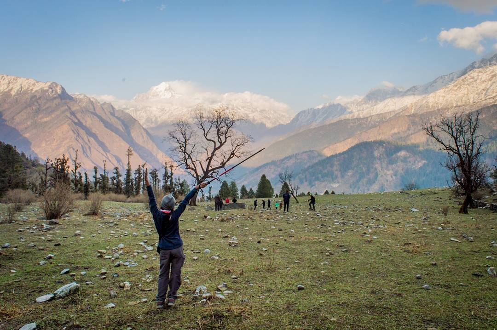

"Go climb that goddamn mountain!"
The experience of a summit climb is special because it stays with you for a long time. Waking up at wee hours in the morning, dawn breaking as you climb up the mountain flank. For a long time, this flank and trail is the only thing you can see ahead of you. And then, coming up to the ridge where your world widens. And then, finally, the summit where everything else is below you. The feeling on top of a summit is indescribable. There is a sense of achievement, the feeling you have earned this view. The kind of internal confidence you gain after an adventurous summit climb is difficult to shake.
Trekking in India started when the land was inhabited in prehistoric times. There are perhaps as many trekking routes in India as there are Indians. It was in the 1970’s and 1980’s that trekking started gaining in popularity as a recreational/adventure sport. A number of religious sites and shrines across the country, especially in Jammu and Kashmir, and in the Garhwal region of Uttarakhand – such as Badrinath, Amarnath, Gangotri, Hemkund, Joshimath, Kedarnath, Vaishno Devi and Yamunotri – entail trekking for a couple of days in the mountains. Trekking in India has grown in leaps and bounds and the current trekking scenario is very promising, with thousands of Indians and foreigners hitting trekking trails each year. What India can boast of is some of the most stunning trekking routes in the world – many of the mountain passes in the Ladakh and Zanskar Himalayas are above 5000m. But there are plenty of gentler and smaller trails, at different altitudes, both in the mountains and in the forests. If you’re looking for less arduous hikes, you’ll find plenty in in the Western Ghats and the Nilgiri Hills of south India (Munnar and Wayanad in Kerala, Coorg in Karnataka, and around Ooty in Tamil Nadu). So, Happy Exploring!!! :D